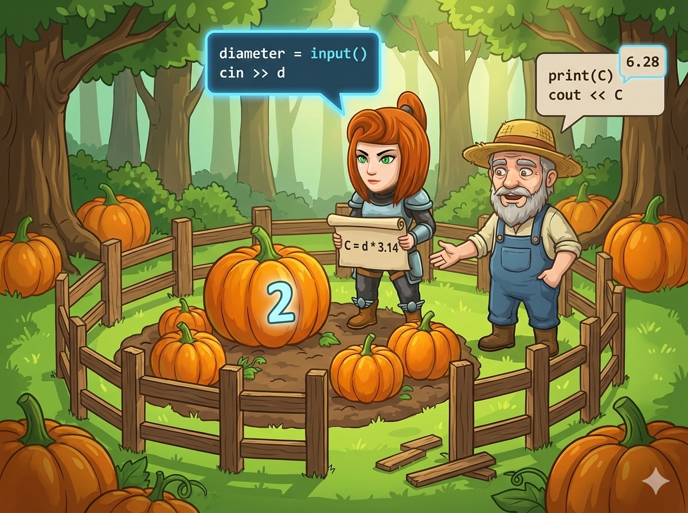

在一片安静的森林里 🌲，农民伯伯看着他圆圆的南瓜地发愁。 他想给南瓜地围上一圈篱笆墙，防止小动物来偷吃，可是他不知道需要买多长的篱笆。
英雄来帮忙啦！只要测量出圆的直径（穿过圆心的最长距离），就能算出周长（一圈的长度）。 公式是：周长 = 直径 × 3.14。
👉 任务： 编写一个程序，读入直径，帮农民伯伯算出篱笆的长度！
这一关的关键是处理“带小数点的数字”。
int 存整数，但这次结果会有小数点（比如 15.7），所以必须用 double（双精度浮点数）。d * 3.14 就可以了。cout 很聪明，它会自动把计算结果打印出来。input() 读进来的是字符串，我们需要用 float() 把它变成可以计算的小数。* 代表乘法。print 负责展示最后的结果。请把下面的代码补充完整，帮农民伯伯解决难题！
#include <iostream> using namespace std; int main() { // 1️⃣ 声明变量：d表示直径，len表示长度 // 因为会有小数点，所以用 double 类型 double d, len; // 2️⃣ 输入：读取圆的直径 cin >> d; // 3️⃣ 计算并输出：直接在 cout 里算出来 // 公式：直径 * 3.14 cout << d * 3.14 << endl; return 0; }
# 1️⃣ 输入：读取直径，并用 float() 变成小数 a = float(input()) # 2️⃣ 计算：周长 = 直径 * 3.14 c = a * 3.14 # 3️⃣ 输出：打印计算结果 print(c)
💡 小贴士：
乘号是星号 *，不是字母 x 哦！另外，3.14 的小数点是英文的句号 .。
double
Python 用 float
来存储带小数点的数字。
* (Shift + 8)。周长 = 直径 * 3.14。